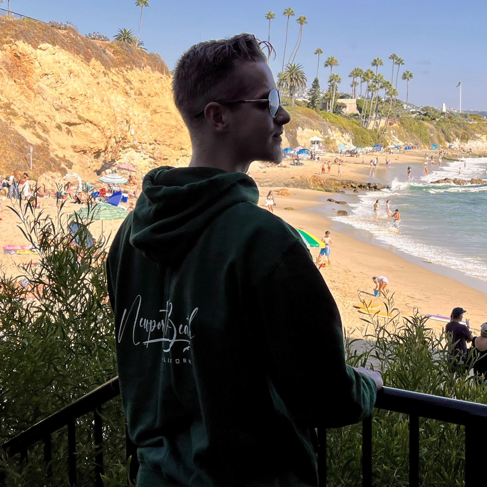

I am Mo Jansson, a Brigham Young University student with experience in live show hosting, real estate support, content creation, audio production, and information organization. My goal is to do no harm and take no crap while bringing strong organization, communication, and problem-solving skills to every opportunity.
